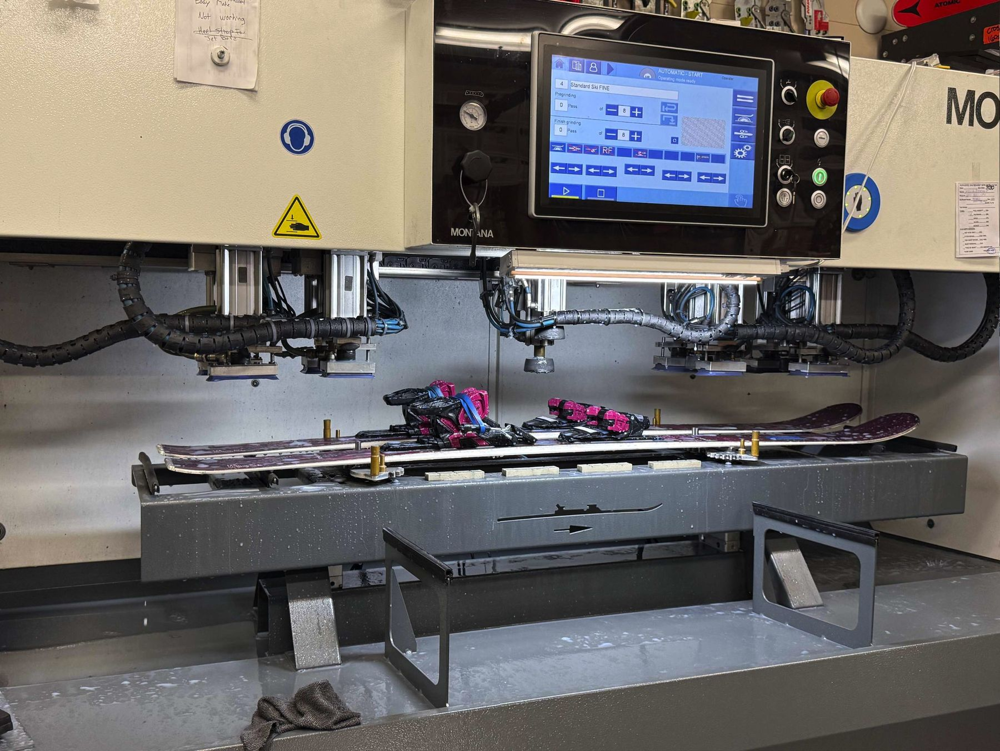

News from both stores, sale dates, racing, new brands and gear, and what the local mountains are up to.

Loon’s Black Ridge: 272 acres of tree skiing, and what to bring
Loon announced the biggest terrain expansion in its history: expert-only glades east of North Peak, no lifts, no snowmaking, opening winter 2027-28. Here is what the announcement says and the gear that makes sense for it.

The Fall Tent Sale is on: September 18 to October 12 in Lincoln
Our biggest deals of the year are back under the tent on Railroad Street: skis, snowboards, boots, apparel, helmets and everything in between. Staff picks and deal reveals all sale long.

The 2027 Smith goggles just landed at Rodgers Lincoln
ChromaPop clarity, dialed-in fit, colorways for days. Come see the wall for yourself.

Inside binding mounting and testing at the Scarborough shop
Mounted, adjusted, tested. Every pair is checked before it leaves our hands. Get your setup ready for the season.
Unwrapping the new Kästle Paragon 93
The Paragon 93 is in the store now. Come check them out.
Atomic Day recap: the full 2027 lineup is on the floor
Skis, bindings, boots and race skis just hit the shop floor. Stop in and get your hands on next year’s gear first.

Race gear walkthrough: seven race brands, all in one spot
Avery gives the full lineup at the Lincoln shop: Atomic, Fischer, Head, Rossignol, Dynastar, Van Deer and Salomon race skis. Whether you’re gate training or chasing PRs, we have the setup to match your program.

Off-season tune-ups: our techs are servicing gear all summer
Summer’s here, but your gear still needs love. Off-season tune-ups mean your skis and boards are ready to rip the second the snow flies. Don’t wait till November.

The Tent-Less Tent Sale: Scarborough gets its own summer sale
Same markdowns as the Lincoln tent sale, just under an actual roof. Skis, boots, bindings, complete junior packages and helmets, July 24 through August 9.